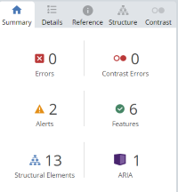
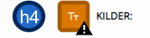
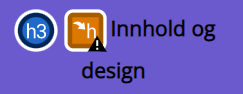
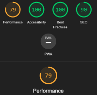
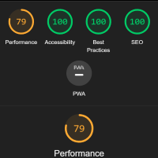
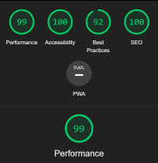
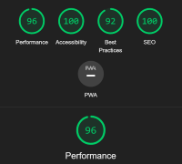

Den første analysen som ble gjort på Maribee sin nettsted var WAVE analysen av forsiden.
Resultatene som er vist på figuren, viser at det kun er en error.
Erroren formidler at det finnes en tom lenke i forsiden.
Dette skyldes href="javascript:void(0)" linken, for å fikse den, ble href="javascript:void(0)" byttet ut med href="#", og aria-label="Hamburgermeny" ble lagt til for å gi objektet et
gjenkjennlig navn, slik at det er en etikket for tilgjengelig navn for objektet.
Videre, vises det 4 kontrastfeil, disse skyldes at lenkene til sosiale medier i footeren må ha høyere kontrast.
For å fikse dette ble fargen på linkene i footeren endret til hvit, slik at kontrasten øker. Dermed ble det lagt til en hover og underline ble fjernet, slik at knappen ser klikkbar ut.
Men siden hoveren ikke vises på mobil, så ble det lagt til en underline når skjermen går over til mobil. Disse endringene ble gjort på tanke på UU.
Reultatene viste i tillegg 5 varsler, tre av disse skyldes at bildene på innholdsiden har samme alternativ tekst på alt-attributtet og de to andre skyldes en redundant link.
Ny alternativ tekst ble lagt til bildene, den nye alternativ teksten var god og beskrivende, slik at nettsedet blir mer UU-venlig. Ingen endringer ble gjort for å fikse redundant linkene,
grunnet at det var en del av oppgaven at logoen skulle føre til hjemmesiden samt hjem-knappen. Til den grunn ble det tenkt at det er kanskje best å la det være som det er.

Følgende, ble det gjort en analyse av hver innholdsside som nettstedet inneholdt, siden noen feil var gjeldene for både forsiden og innholdssidene, ble det rettet på først.
Dette var for eksmpel linkene i footeren som skulle ha høyere kontrast, samt alternativ teksten til bildene.
Som vist, dukket disse varslingene opp på UUvsSEO siden, for å fjerne disse ble teksten på kildene gjort litt større ved å bytte fra h4 til h3, samt ble h3 gjort om til h2.
Siden disse feilene gjaldt flere innholdsider, ble samme endringer gjort på de i tillegg.


Det var ikke noe annet som skulle fikses på innholdsiden og det eneste som ikke ble redigert på var redundant linkene.
Avsluttende ble alle varslene og feilmeldingene fjernet, slik at nettstedet er mer UU-vennlig.
Før
Etter
Errors
- Tomme Lenker i header, grunnet href="javascript:void(0)" linken.
Alerts
- Utelatt eller hoppet over et headingsnivå
- For liten tekst
- Lik alternativ tekst på flere bilder
Contrast Errors
- Fire kontrast-errors skyldes sosiale medie lenkene i footeren.
- href="javascript:
void(0)",
ble byttet ut med href="#" og aria-label="Hamburgermeny" ble lagt til for å gi objektet et gjenkjennlig navn.
- For å fjerne de to varslene ble teksten på kildene gjort litt større ved å bytte de fra h4 til h3,
samt ble h3 gjort om til h2.
- Ny alternativ tekst ble lagt til bildene,
den nye alternativ teksten var god og beskrivende, slik at nettsedet blir mer UU-venlig.
WAVE
- Fargen på lenkene i footeren ble endret til hvit, slik at kontrasten øker.
Lighthouse

Siden Wave sjekker for det meste UU-venlighet, ble det benyttet Lighthouse for å se over SEO samt andre ting som performance,
accessibility og best practices. Figuren viser resultatene av analysen av forsiden på desktop, generelt såkret nettstedet bra men den såkret lavt på performance.
Til den grunn, ble det bestemt det behøves å gå over grunnen til at performance skåret lavt, videre forsøke å øke den ved å rette opp i feil.
Men, først så ble SEO skåren til forsiden vudert:

På SEO skåret nettsiden sin forside 90, grunnen til dette er at html-sidene mangler en meta description tag.
Følgende ble det lagt til en meta description tag i alle html sidene hvor det beskrives hva html siden inneholder.
Hver innholdsside har unik innhold, til den grunn varierer content tagen fra html til html side. Etter at disse endringene
ble gjort, skåret alle html-sidene 100 på SEO som vist på figuren til høyre.
Det ble observert at hovedgrunnen til at performance skåret lav skyldes for det meste bildene på forsiden,
størrelsen på disse bildene er for stor og de har ikke blitt nedskalert på en fornuftig måte.
Dette fører videre til at siden bruker lengre tid på å laste seg opp nettsedet, og forsinkelser oppstår.

Det som kan gjøre for å løse dette er å nedskalere bildene før de legges inn i Visual Studio Code,
med dette menes det at orginal bildestørrelse skal nedskaleres, slik at når html-siden blir lastet opp,
så slipper den å laste opp pixler som er unødvendige.
Som vist til høyre, så ble resultatene mye bedre ettersom disse endringen ble gjort.
innholdsidene skåret like bra etter endringene, videre skal det bli analysert på lik måte, men nå for
mobil og ikke desktop.
Generelt skåret forsiden til nettsiden bra på alt, untatt performance. Performance og SEO, påpekte at linkene i footeren overlapper hverandre.
For å fikse dette ble det lagt in maring og padding rundt a-taggene samt ble ikonene gjort om til større i størrelsen. Videre ble det laget en
hover på ikonene slik at man kunne se at de var klikkbare. Teksten ble fjernet slik at det ikke stod facebook også en facebook ikon, men heller bare ikonet.
For å øke accessibility måtte kontrasten på meny-baren på mobilversjonen økes, samt krevde lenkene i footeren en beskrivende tekst
om lenken. For å skrive en beskrivende tekst til lenkene i footeren ble aria-label tatt i bruk, det viste seg at det funket bra og skåren gikk opp.
Men, kontrasten på meny-baren måtte også fikses, dette ble enkelt ordenet ved at fargen på a elementene i meny-baren ble endret til svart. slik økte
kontrasten og skåret gikk opp til 100 på accessibility.

Etter disse endringene viste det seg at SEO skåret 100, og performance gikk opp til 96 som vist på bilde til høyre. Innholddsidene skåret det samme, men det ble gjort noen få endringer
på kontktsiden får at den skulle skåre like høyt. Det ble lagt til en title for iframe, samt ble kontrasten på en knapp økt, ved å endre fargen på den.
Konkludernede, skåret ikke nettstedet fult på alt på mobil og desktop, men fokuset med lighthouse var å øke SEO.
SEO skåret 100 på alle innholdsidene i nettstedet, noe som betyr at målet med analysen ble nådd.
Før
Etter
Accessibility
SEO
Performance
- Manglet høy kontrast på meny-baren på mobilversjonen
- Fargen på a elementene i meny-baren ble endret til svart.
slik økte kontrasten og skåret gikk opp til 100 på accessibility.
- Mangler meta description tag
- Mangler en beskrivende tekst til lenkene i footer
- Det ble lagt til en meta description tag i alle html sidene hvor det beskrives hva html siden inneholder
- For å skrive en beskrivende tekst til lenkene i footeren ble aria-label tatt i bruk, det viste seg at det funket bra og skåren gikk opp
- For stor bildestørrelse/ feil metode brukt for nedskalering
- Sosiale medie linkene i footeren overlapper hverandre
- Orginal bildestørrelse ble nedskalert, slik at når html-siden blir lastet opp, så slipper den å laste opp pixler som er unødvendige.
- For å fikse dette ble det lagt in maring og padding rundt a-taggene samt ble ikonene gjort om til større i størrelsen.
Videre ble det laget en hover på ikonene slik at man kunne se at de var klikkbare.(SEO)